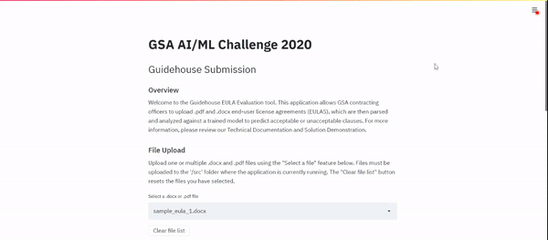

Guidehouse EULA Evaluation Tool Solution Demonstration - Guidehouse
Why this tool was created
As part of the software or services acquisition process, the General Services Administration (GSA) must review associated end-user license agreements (EULA) for terms and conditions to ensure compliance with Federal laws and regulations. On average, each manual review process requires approximately 7-14 days. GSA contracting officers (CO) must ensure that all unacceptable terms and conditions are identified, and if warranted, they must coordinate a legal review with the Office of General Counsel. Ultimately, should the EULA contain language that conflicts with Federal requirements, the CO must negotiate changes to the EULA to remove the problematic language.
In response to this time-intensive manual review, GSA developed a public challenge with the goal of developing an artificial intelligence (AI) or machine learning (ML) solution that will review EULAs for terms and conditions that are unacceptable to the government. Team Guidehouse has developed its EULA Evaluation tool to solve this challenge. Our solution allows users to upload their PDF and MS Word EULAs via a sleek, easy-to-use interface that parses, creates features, and applies our trained AI/ML model to identify unacceptable clauses, reporting predictions and associated confidence scores for each clause.
Solution User Guide
Before getting started
This tool is a web based application that runs directly on the laptop. It is not a website that you access through the internet, however it is accessed through a web browser. To install the Guidehouse EULA Evaluation Tool on your laptop, follow the following instructions:
Verify these assumptions are met.
- User has the [Anaconda Distribution][https://docs.anaconda.com/anaconda/install/windows/] from Continuum installed.
- The Anaconda Distribution has python version 3+ installed. This application will not run on Python 2 versions or on python 3.8.
- User has a modern internet browser such as Edge, Chrome, or Firefox installed. After the application is launched, it can be accessed from any of these browsers at the following address: http://localhost:8502/
In the folder
ai-ml-challenge-2020\submissions\Guidehouse_Submission\Guidehouse Code and Data\Guidehouse Source Code, Double-Click "Install.bat". This batch file will install the program within theGuidehouse Source Codefolder on your computer and utilizes the Anaconda functionality in the background to do so.
Starting the application
After installation, double-click on Run_App.bat file and wait for the tool to open up on your browser.
If your browser opens but the application does not appear on the page, then refresh the tab until the application loads.
DO NOT CLOSE THE CONSOLE WINDOW THAT OPENS ON LAUNCH. This will cause the application to exit. However when you are finished using the UI, you should close both the browser and the console window to completely exit the application.
Uploading data
Upload one or multiple .docx or .pdf EULA files using the Select a file drop-down feature. The files must be located in the same folder in which the application is currently running.
If you do not have any .docx or .pdf files uploaded to the folder, you will see a yellow warning banner stating, "Please upload a .docx or .pdf file in the src file and refresh the webpage before proceeding". As the banner indicates, copy or move the EULA file(s) you would like to analyze in the location where the application is running. After they have been moved, refresh the webpage to proceed with uploading your data to the evaluation tool.

The drop-down feature filters out ineligible file types (i.e., non-docx or non-pdf files). When uploading to the list of files to analyze, the application checks if the uploaded file is unique. Therefore, if you attempt to upload duplicate files, the application will not add the duplicate version to the file list.
Note: Please do not submit any sensitive or classified data.

If you would like to reset the uploaded file list, click the Clear file list button.

Viewing uploaded EULAs
After the EULAs are uploaded, each file is parsed into individual clauses, essentially breaking down the EULAs into digestible clauses that will be used to generate features that are input into the AI/ML model. To view the uploaded EULAs in their clause form, select the Check to display parsed EULAs in the sidebar checkbox. This action shows the EULA clauses in the sidebar with each row representing a clause and its corresponding clause number. To hide the clauses table, un-select the same checkbox.

Generating acceptability predictions
To initiate the evaluation, click the Predict! button. Note that as the feature generation process is resource-intensive, running this step may take more than 2-3 minutes to run. The required time will vary depending on the number and size of EULA files uploaded, as well as your computer's resource bandwidth.

This action will automatically generate a yellow "Building features..." banner, which will update with a green "Features successfully created." message when complete.

Following feature creation, a similar "Modeling..." banner will appear, and after it updates with "Prediction complete!", you can view the prediction results.
Interpreting results
Results are displayed in an output table. The model outputs a probability score, which represents the likelihood of the clause being acceptable as a percentage. Clauses with probability greater than 0.50 (or 50%) are considered acceptable with a prediction score of 0. Conversely, clauses with probability less than or equal to 0.50 are considered unacceptable with a prediction score of 1.
If multiple EULA files are evaluated, each EULA's results are shown in a separate table. As with the parsed EULAs viewer before, each clause is displayed in a separate row along with its prediction score and probability of being unacceptable.

If you would like to evaluate additional EULA files, scroll up to the File Upload section and click the Clear file list button to restart the prediction process.
Looking behind the scenes
To prepare the data for the underlying feature processing algorithm and AI/ML model, Guidehouse cleaned the GSA-provided training data by removing punctuation, special characters (e.g., asterisks, percent symbols, at signs, etc.), and non-English words.
After testing multiple feature generation techniques, Guidehouse selected the pretrained DistilBERT, a small multipurpose language representation model, based on Bidirectional Encoder Representations from Transformers (BERT). Applying transfer learning by embedding clauses using DistilBERT was the optimal feature generation of those tested, given limited and messy training data.
For model execution and optimization, following the assessment of various modeling techniques, Guidehouse ultimately developed an ensemble supervised classification model. For more information, detailed documentation, and citations, please see the Description of Methods document.
Closing the application
To close the application, there are two steps.
- Close the browser tab that the app was running in. You do not need to close the entire browser, just the tab.
- Close the command prompt window.
Performing these steps in order will ensure that the browser closes completely and does not use unnecessary resources on your computer.